Academic Projects
AIAA Design Competition: Homeland Defense Interceptor
- Evaluated aircraft structural capability through V–n diagrams and load-path analyses across multiple mission profiles, ensuring maneuverability and structural integrity at 50% fuel.
- Performed FEA on tapered I-beam wing spars under +7g and −3g loading, validating Von Mises stress distributions and confirming factors of safety above design requirements.
- Modeled and analyzed main and nose landing gear under realistic touchdown loads, optimizing tire sizing, retraction design, and geometry for stability, clearance, and safe ground operation.
Control and Aerodynamic Analysis of Oblique Wing Aircraft
- Investigated coupled flight characteristics of oblique wing aircraft through wind tunnel testing and CFD simulations.
- Developed and validated a control algorithm to mitigate roll-pitch-yaw coupling.
- Proposed recommendations for future aerodynamic and control system research.
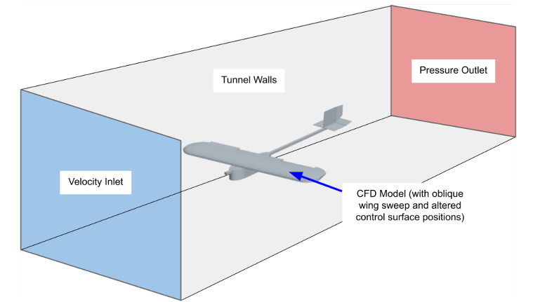
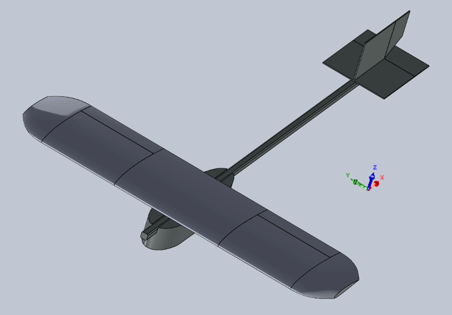
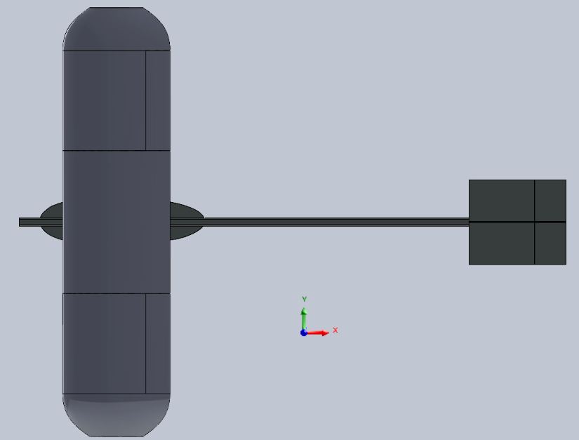
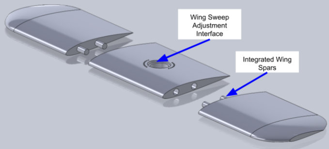
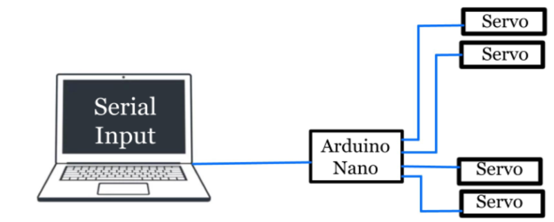
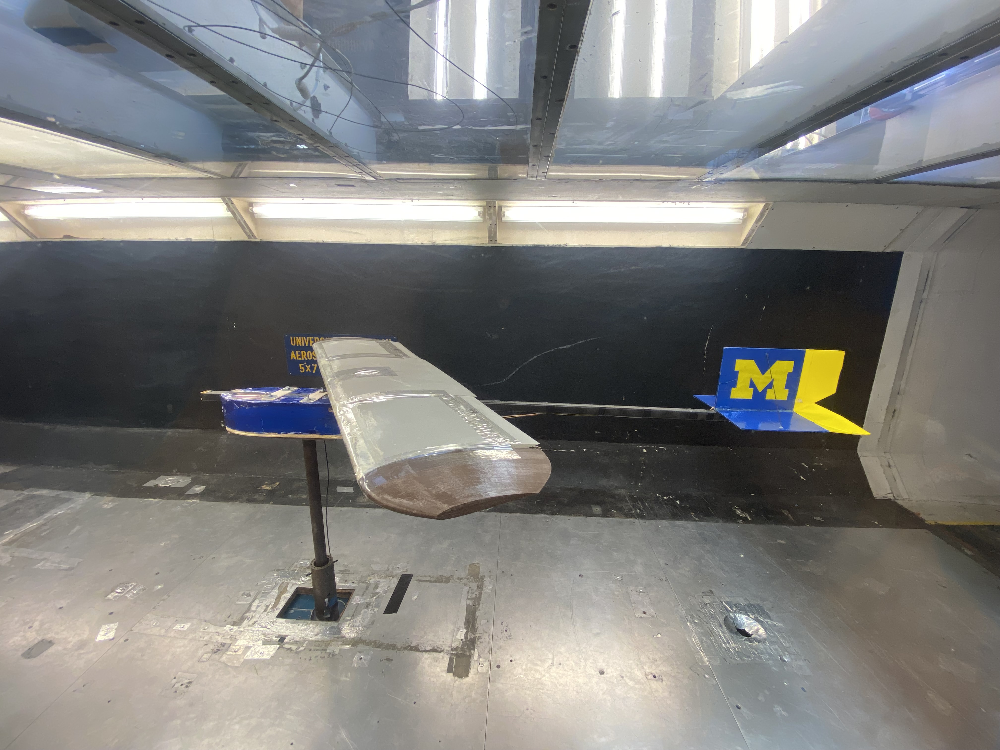
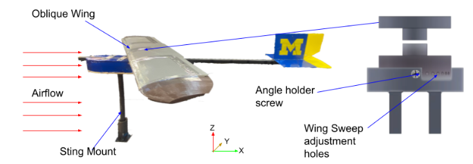
 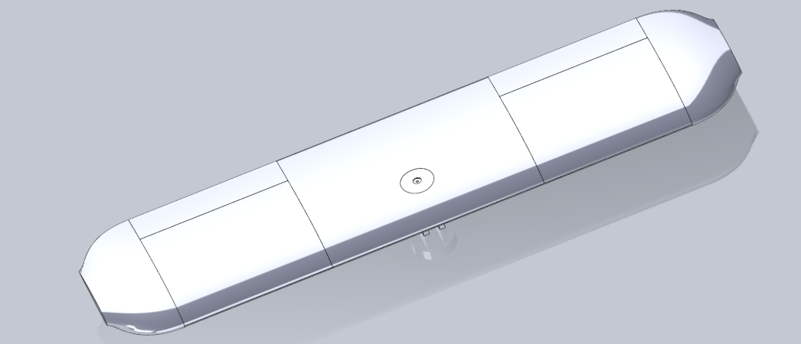
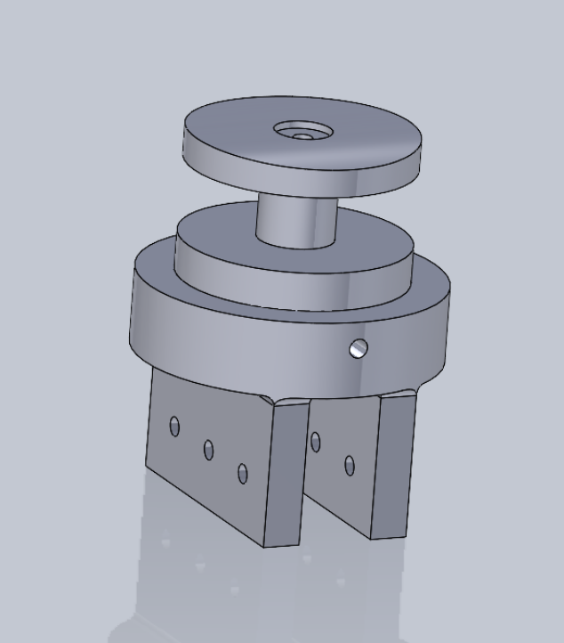
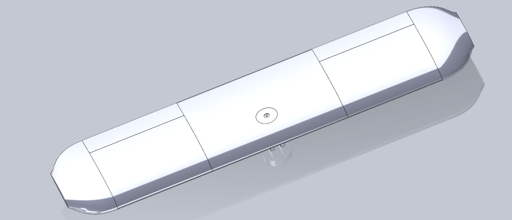
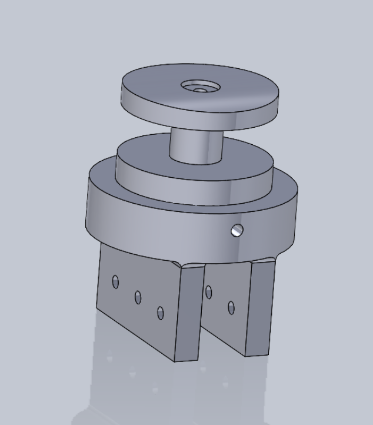
Read More About the Oblique Wing Project
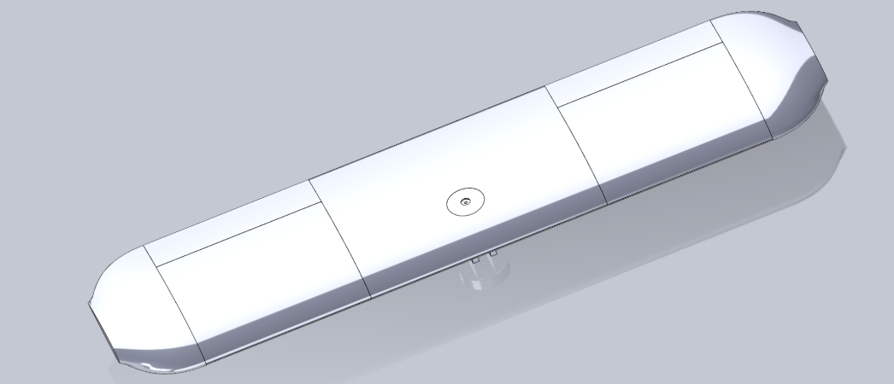
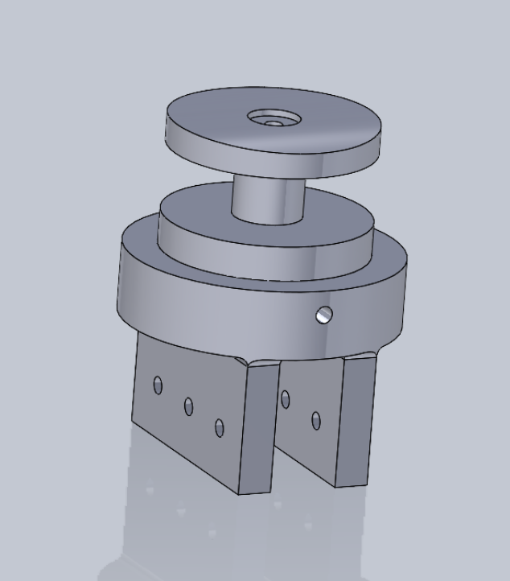
Aerodrifter: Titan Exploration Hovercraft
- Designed a lightweight hovercraft for Titan's unique environment with a total mass of 497g, under the 800g limit.
- Achieved 19 N of lift to adapt to Titan's low gravity and dense atmosphere.
- Integrated two Firefly motors and an Arduino Nano for propulsion and control.
- Successfully carried a 200g payload and demonstrated endurance in simulated Titan conditions.
Personal Projects
Single-Motor RC Airplane Design, Build, and Fly
- Designed a model airplane using SolidWorks, including custom motor mount, landing gear, and wheels.
- Conducted CFD and AVL simulations to ensure aerodynamic efficiency and flight stability.
- Fabricated components using foam board and 3D-printing for optimized weight and durability.
- Integrated and fine-tuned motor, servos, and RC system for smooth and efficient operation.
- Successfully achieved stable flights with precise maneuverability during testing.